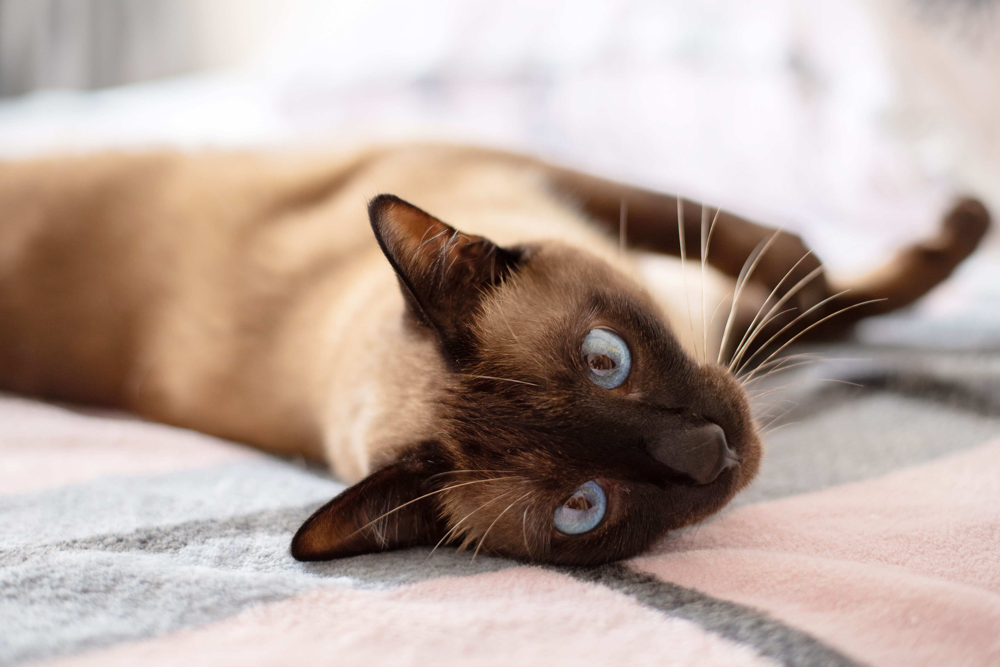
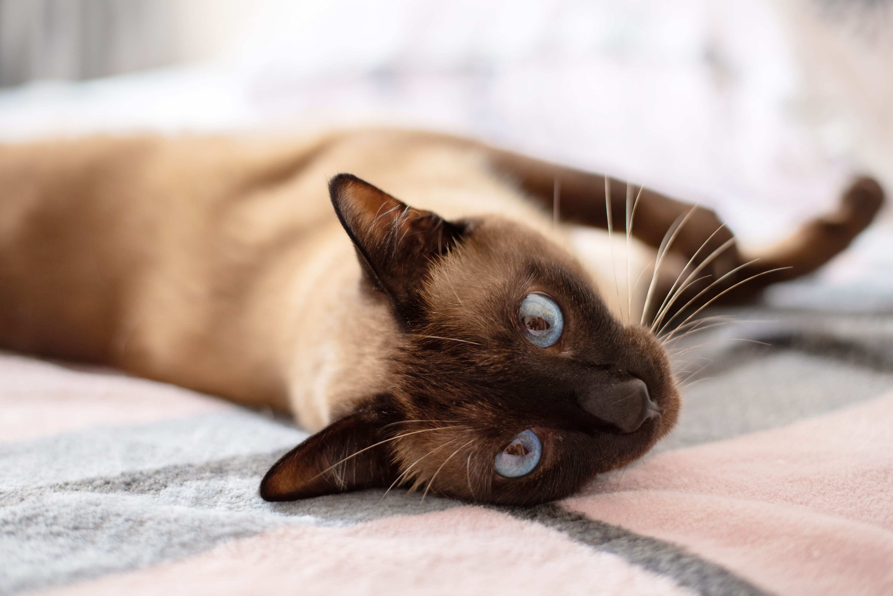

Purr-fectly Captivating: Unveiling the Mystique and Magic of Cats
Cats, with their enigmatic charm and graceful presence, have captivated humans for centuries. As independent creatures with a touch of mystery, they effortlessly command attention and admiration. Whether they are lounging in the sun, playfully chasing shadows, or gracefully leaping through the air, cats possess an innate elegance that is simply mesmerizing.
One of the most striking features of cats is their extraordinary agility. With impeccable balance and nimble reflexes, they navigate their surroundings with seemingly effortless grace. From effortlessly scaling tall trees to executing acrobatic jumps, their athletic prowess is a sight to behold. Their lithe bodies, flexible spines, and sharp claws make them exceptional climbers and hunters, showcasing their innate predatory instincts.
Cats are masters of relaxation, embodying the epitome of serenity. They have an uncanny ability to find the coziest spots in the house, curling up into seemingly impossible positions with complete contentment. Observing a cat lounging in a sunbeam or peacefully dozing on a soft cushion can evoke a sense of tranquility and inspire a moment of reflection on life's simple pleasures.
Beyond their physical beauty, cats possess a deep well of intelligence and curiosity. Their inquisitive nature drives them to explore their environment, investigating every nook and cranny with unwavering curiosity. Their keen senses, particularly their exceptional hearing and night vision, make them expert hunters and masters of stealth.
1.Persian
Persian cats are known for their long, luxurious coats, expressive round faces, and sweet temperament. They have a distinctive appearance with a flat face, short nose, and large round eyes.
2.Siamese
Siamese cats are known for their striking blue almond-shaped eyes, sleek short coat, and color-point pattern, where their extremities (ears, paws, tail) are darker than the rest of their body. They are vocal and highly interactive cats.
3.Bengal
Bengal cats have a wild appearance reminiscent of their ancestor, the Asian leopard cat. They have a spotted or marbled coat that resembles that of a leopard or a jaguar. Bengals are active, playful, and intelligent cats.
4.Sphynx
Sphynx cats are hairless, known for their wrinkled skin, large ears, and captivating eyes. Despite their lack of fur, they have a warm and affectionate personality. Sphynx cats require regular bathing to maintain their skin's health.
 


Interesting facts about Persian
1.Ancient Origins: Persian cats have a long history, with origins dating back to ancient Persia (modern-day Iran). They are one of the oldest cat breeds and have been cherished companions for centuries.
2.Luxurious Coat: Persian cats are renowned for their long, thick, and silky coats. Their fur requires regular grooming to prevent matting and keep it in good condition. Their coat comes in a wide variety of colors and patterns, including solid, tabby, bicolor, and pointed.
3.Sweet and Gentle Personality: Persian cats are known for their calm, gentle, and affectionate nature. They are generally laid-back and enjoy a relaxed lifestyle. They appreciate a quiet and peaceful environment and can be quite content spending their days lounging and receiving attention from their human companions.
Interesting facts about Siamese
1.Striking Appearance: Siamese cats are known for their striking appearance. They have a distinctive color-point pattern, where their extremities (ears, paws, tail) are darker in color than the rest of their body.
2.Blue Almond-Shaped Eyes: Siamese cats have captivating blue almond-shaped eyes, which are a hallmark of the breed. Their vivid blue eyes are truly captivating and add to their overall beauty.
3.Vocal and Communicative: Siamese cats are highly vocal and are known for their wide range of vocalizations. They are quite talkative and enjoy communicating with their human companions. Siamese cats often engage in "conversation" and express their needs, desires, and opinions through their distinctive meows.
Interesting facts about Bengal
1.Exotic Appearance: Bengal cats have a striking and exotic appearance that resembles their wild ancestor, the Asian leopard cat. They have a distinctive spotted or marbled coat pattern that comes in various colors, such as brown, silver, and snow.
2.Wild Ancestry: Bengal cats are descendants of the Asian leopard cat (Prionailurus bengalensis), a small wild feline found in parts of Asia. They were selectively bred to retain the appearance of their wild counterparts while having a domesticated temperament.
3.Active and Energetic: Bengal cats are known for their high energy levels and playful nature. Providing them with interactive toys, puzzle feeders, and opportunities for play and exercise is essential to satisfy their active nature.
Interesting facts about Sphynx
1.Hairless Appearance: The most striking characteristic of Sphynx cats is their lack of fur. While they may appear completely hairless, they actually have a fine down-like coat that gives them a soft and warm texture when touched.
2.Natural Genetic Mutation: The hairlessness of Sphynx cats is the result of a natural genetic mutation. This mutation affects the production of a protein called "fel d1," which is the primary allergen responsible for triggering allergies in humans. As a result, some people with allergies may find that they have reduced reactions or are even able to tolerate being around Sphynx cats.
3.Warm to the Touch: Due to their lack of fur, Sphynx cats have a higher body temperature compared to other cat breeds. Their skin acts as a natural heat sink, making them feel warm to the touch.